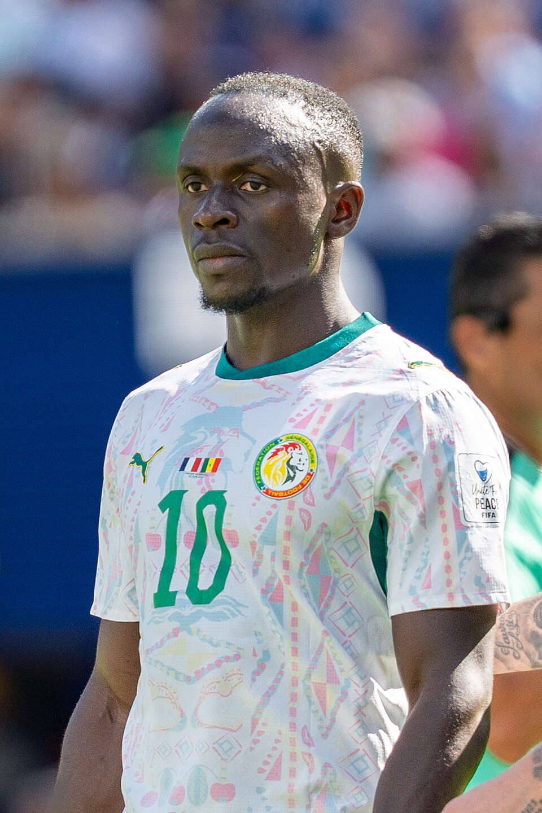
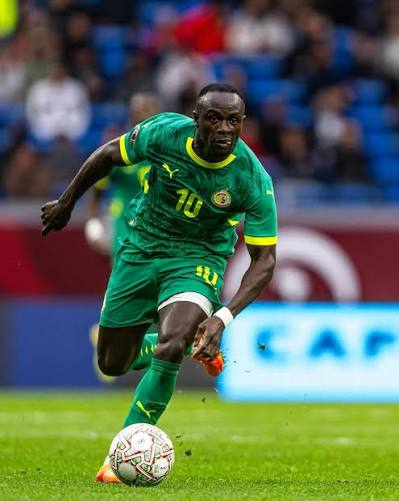
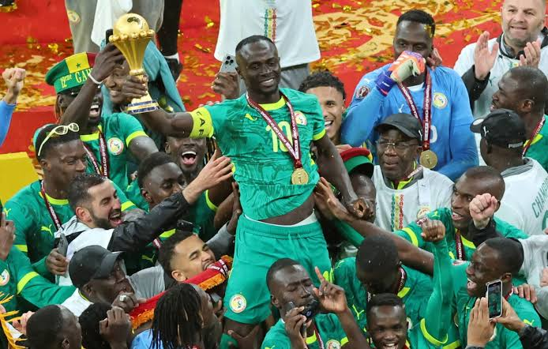
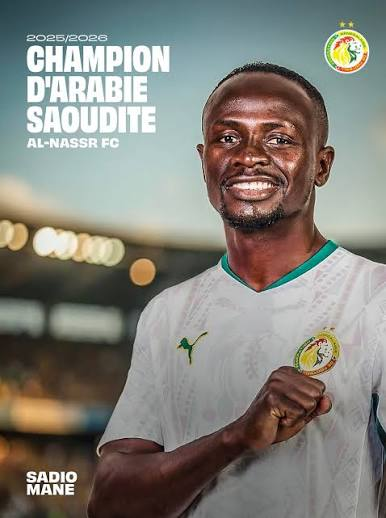
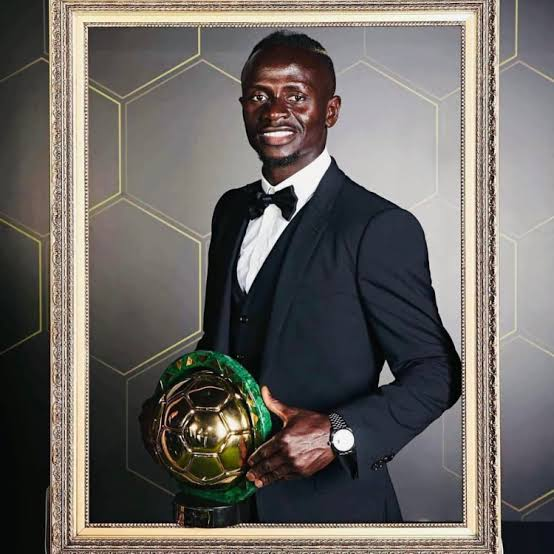
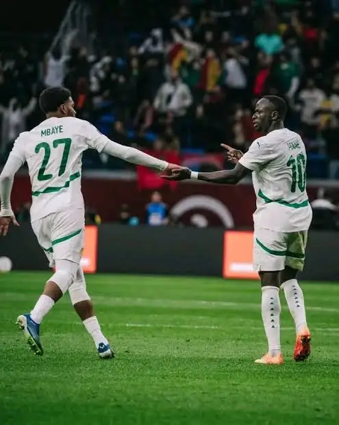
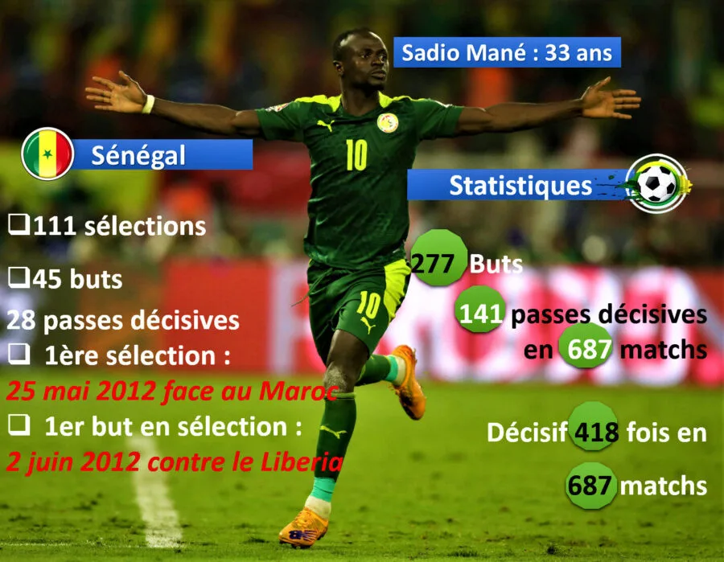

Sadio Mané est un footballeur international sénégalais né le 10 avril 1992 à Bambali, dans le sud du Sénégal. Son parcours est marqué par une progression depuis le football local jusqu'aux plus grands championnats européens.
Footballeur international sénégalais
Sadio Mané
Découvrez le parcours, la carrière, le palmarès et les statistiques de Sadio Mané.
Découvrir son parcoursPrésentation

Nom complet : Sadio Mané
Nationalité : Sénégalaise
Poste : Attaquant
Date de naissance : À compléter après vérification
Lieu de naissance : À compléter après vérification
Biographie
Enfance et débuts
Dès son enfance, Sadio Mané développe une forte passion pour le football. Originaire de Bambali, il décide très jeune de poursuivre son rêve de devenir footballeur professionnel.
Les débuts au Sénégal
Son talent est repéré à Mbour alors qu'il participe aux compétitions locales. Il rejoint ensuite l'AS Génération Foot, où il poursuit sa formation et se fait remarquer par ses qualités techniques et sa vitesse.
Le départ vers l'Europe
Après ses débuts au Sénégal, Sadio Mané rejoint le FC Metz et commence son parcours professionnel en Europe. Il poursuit ensuite sa progression en Autriche avec le Red Bull Salzbourg, avant de rejoindre le championnat anglais.
Une carrière internationale
Avec l'équipe nationale du Sénégal, Sadio Mané fait ses débuts en 2012. Il participe ensuite à plusieurs grandes compétitions internationales et devient progressivement l'un des joueurs importants de la sélection sénégalaise.
Un parcours marqué par les titres
Sa carrière est également marquée par plusieurs succès en club et avec la sélection nationale. Avec le Sénégal, il remporte notamment la Coupe d'Afrique des nations en 2021, après plusieurs participations aux compétitions africaines.
Carrière
-
AS Génération Foot
2009 – 2012
Sadio Mané rejoint l'AS Génération Foot au Sénégal, où son talent est rapidement remarqué. Cette étape constitue le début de son parcours vers le football professionnel.
-
FC Metz
2012
Il rejoint le FC Metz et signe son premier contrat professionnel en France. Cette expérience marque ses débuts dans le football professionnel européen.
-
Red Bull Salzbourg
2012 – 2014
En Autriche, Sadio Mané poursuit sa progression et s'impose progressivement comme un joueur offensif important. Il remporte plusieurs titres avec le club.
-
Southampton FC
2014 – 2016
Sadio Mané découvre la Premier League avec Southampton. Il confirme ses qualités offensives et se fait davantage connaître sur la scène européenne.
-
Liverpool FC
2016 – 2022
Son arrivée à Liverpool constitue une étape majeure de sa carrière. Il participe aux succès du club dans les compétitions nationales et internationales.
-
Bayern Munich
2022 – 2023
Il rejoint ensuite le Bayern Munich et découvre le championnat allemand. Il remporte notamment le championnat d'Allemagne avec le club.
-
Al-Nassr
Depuis 2023
En 2023, Sadio Mané rejoint Al-Nassr en Arabie saoudite, poursuivant ainsi sa carrière professionnelle dans un nouveau championnat.
Palmarès
Palmarès en club
Red Bull Salzbourg
- Championnat d'Autriche — 2014
- Championnat d'Autriche — 2015
- Coupe d'Autriche — 2014
Liverpool FC
- Ligue des champions — 2019
- Supercoupe de l'UEFA — 2019
- Coupe du monde des clubs de la FIFA — 2019
- Championnat d'Angleterre — 2020
- Coupe de la Ligue anglaise — 2022
- Coupe d'Angleterre — 2022
Bayern Munich
- Supercoupe d'Allemagne — 2022
- Championnat d'Allemagne — 2023
Al-Nassr
- Coupe arabe des clubs champions — 2023
- Championnat d'Arabie saoudite — 2026
Palmarès avec le Sénégal
Équipe nationale
- Coupe d'Afrique des nations — 2021
Distinctions individuelles
- Joueur africain de l'année — 2019
- Joueur africain de l'année — 2022
- Meilleur joueur de la CAN — 2021
- 2e du Ballon d'or — 2022
- 4e du Ballon d'or — 2019
- Prix Sócrates — 2022
Statistiques
Matchs internationaux
130
Avec le Sénégal
Buts internationaux
54
Avec le Sénégal
Passes décisives
29
Avec le Sénégal
Débuts internationaux
2012
Première sélection
Vidéos
Vidéo 1
Vidéo 2
Vidéo 3
Vidéo 4
Vidéo 5
Galerie





